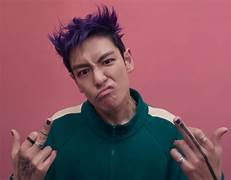
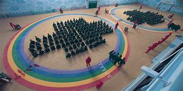

Buenos
Jugadores
Los jugadores arriesgan su vida para ganar 456 mil millones de wones

Seong GI-hun - T1/2
Es el protagonista con el número 456, debe muchos millones a los prestamistas

Choi Su-bong(Thanos) - T2
Choi Su-bong es un rapero famoso con el número 230, lo perdió todo invirtiendo en la criptomoneda de MGcoin
Tambien perdió mucho porque en un concierto se olvidó la letra de sus propias canciones
Lee Myung-gi(MGcoin) - T2
Lee Myung-gi o MGcoin es un Youtuber con muchos suscriptores que habla de criptomonedas.Tiene el número 333. Se metió en un lío tremendo porque creó una criptomoneda llamada "Dalmatian" en la que millones de personas invirtieron pero aún así fracasó
Abdul Ali - T1
Abdul Ali es el jugador número 199, Es originario de Pakistán en el que en ese momento hubo muchas guerras por lo que Abdul Ali migró hacia Corea del Sur. Tiene una esposa y 2 hijos

Oh Il-nam(001) - T1
Oh Il-nam es un anciano con el número de jugador 001. Es el organizador de los juegos y el VIP más importante. Murió al final de la temporada 1
Hwang In-ho(001) - T1/2
Hwang In-ho es el jugador 001 de la segunda temporada. En realidad es el Frontman por lo que cuando estaban atacando la sala de control él atacó a su grupo y se cambió rápido de ropa. Es el hermano perdido de Hwang Jun-ho

Hwang Jun-ho - T1/2
Hwang Jun-ho es un policía que se infiltró en los juegos como el círculo número 29. En la temporada 2 se retira y se une al equipo de Gi-Hun
Malos
Círculo
Los círculos no pueden hablar y se encargan de las tareas más generales como: limpiar las salas de juego, agarrar a los muertos y cremarlos, Etc
Triángulos
Los triángulos hacen poco pero son importantes: tienen armas como metralletas y matan jugadores

Cuadrados
Los cuadrados son los gerentes. Llevan una simple pistola de mano

Frontman
El Frontman dirige los juegos
Sirvientes de los VIP
Le sirven a los VIP haciendo cosas como servirles bebidas o comidas

Mujeres animales
Estas mujeres se quedan quietas y ya
*No están desnudas como se ve en la imagen sólo tienen body paint

Los VIP
Los VIP son millonarios o billonarios que van a divertirse viendo y apostando en lo juegos en vivo
El reclutador
El reclutador recluta a los jugadores(o los mata) haciéndolos jugar juegos. Aparece en el metro y ahí hace jugar Ddakji a los futuros jugadores. También jugaron Piedra papel o tijera menos 1(sin él) y la ruleta rusa(con él)

Juegos
Juego de luz verde, luz roja
Mientras la luz está en rojo no te debes mover o si no te eliminan, en luz verde sí

Juego de la galleta(panal o dalgona)
Tienes que cortar la figura dentro de la galleta, si la cortas mal te eliminan

Juego de la cuerda(Tira y afloja)
Tienes que jalar la cuerda para tirar al otro equipo

Puente de cristal
En un puente con 2 cristales uno se rompe y te tira al vacío y el otro te resiste

Juego del calamar
Los últimos jugadores juegan al juego del calamar

Pentathlon
El pentathlon se juega con todos con las piernas atadas, se divide en varios juegos en los que si pierdes no te mueres, sólo si se acaba el tiempo:
Ddakji
Lanzamiento de piedra
Gonggi
Trompo
Jegi

Tutorial para el Ddakji
Mingle(carrusel)
Dan un número y los jugadores al acabar la música, corren a las puertas a formar equipos del número indicado